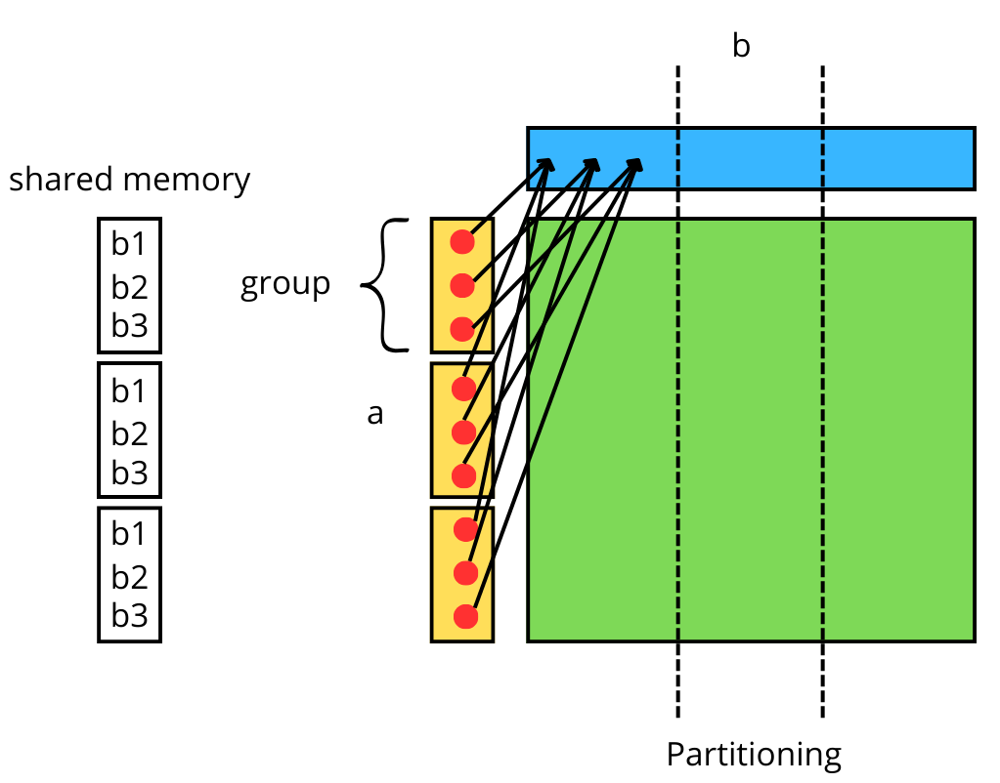
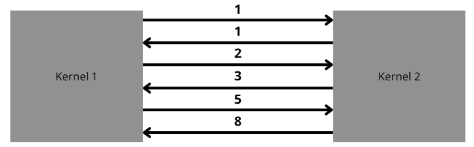
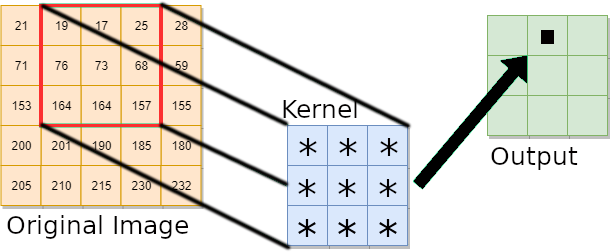

Hands-on session¶
-
This hands-on session is designed to provide you with practical, interactive experience. It allows you to apply theoretical knowledge directly by working with real tools or code, thereby deepening your understanding, building practical skills, and boosting confidence in the subject matter.
-
Using the resources seen this morning, i.e.,
Access to MeluXina¶
-
This workshop IS NOT a session on how to connect to MeluXina
-
You SHOULD ALL have access to MeluXina before starting the workshop
-
Please note that if you did not register in time, we WILL NOT onboard you during the workshop
-
You SHOULD all have received a Welcome Email providing all the necessary guidelines to connect MeluXina
-
If you did not setup your connection to MeluXina in time, please follow the documentation or contact the service desk
Setup¶
- You need first to obtain an interactive job on the fpga partition and load a module
- Clone first the repository and enter the
exercicesfolder
Reservations
Please use only the two following reservations which have dedicated resources for this event:
-
#SBATCH --reservation=eumaster4hpc-fpgafor accessing the 15 reserved FPGA nodes -
#SBATCH --reservation=eumaster4hpc-cpufor accessing the 30 reserved CPU nodes
While emulation can be done using both reservations, FPGA image provided to you can only be executed using the eumaster4hpc-fpga reservation.
Exercices¶
E01-first-compilation¶
First compilation
- Go to
./exercices/E01-first-compilation - Add the minimun required code in
src/01-first-compilation.cppto select the FPGA device and create a sycl queue - Execute your code with the FPGA emulator
- Execute the FPGA image in the
fpga_imagefolder
- To execute your code, uncomment the following lines in
launcher_E01-first-compilation.sh - To test the solution, uncomment the following lines in
launcher_E01-first-compilation.sh
- To run the fpga image, uncomment the following lines in
launcher_E01-first-compilation.sh - Make sure that the header
#SBATCH -p fpgais present
E02-enqueue-kernel¶
Enqueuing a single task kernel
- Go to
./exercices/E02-enqueue-kernel - Add the minimun required code in
src/02-enqueue-kernel.cppto enqueue a single-task kernel. The body of the kernel should contain the following:PRINTF("Result1: Hello, World!\n"); PRINTF("Result2: %%\n"); PRINTF("Result3: %d\n", x); PRINTF("Result4: %u\n", 123); PRINTF("Result5: %.2f\n", y); PRINTF("Result6: print slash_n \\n \n"); PRINTF("Result7: Long: %ld\n", 650000L); PRINTF("Result8: Preceding with blanks: %10d \n", 1977); PRINTF("Result9: Preceding with zeros: %010d \n", 1977); PRINTF("Result10: Some different radices: %d %x %o %#x %#o \n", 100, 100, 100, 100, 100); PRINTF("Result11: ABC%c\n", 'D'); - Execute your code with the FPGA emulator
- Execute the FPGA image in the
fpga_imagefolder
- To execute your code, uncomment the following lines in
launcher_E02-enqueue-kernel.sh - To test the solution, uncomment the following lines in
launcher_E02-enqueue-kernel.sh
- To run the fpga image, uncomment the following lines in
launcher_E02-enqueue-kernel.sh - Make sure that the header
#SBATCH -p fpgais present
E03-transfer-data¶
Transferring data to the device
- Go to
./exercices/E03-transfer-data - Transfer the data from
host_vec_aandhost_vec_bto the device by using thememcpyfunction - Execute your code with the FPGA emulator
- Execute the FPGA image in the
fpga_imagefolder
- To execute your code, uncomment the following lines in
launcher_E03-transfer-data.sh - To test the solution, uncomment the following lines in
launcher_E03-transfer-data.sh
- To run the fpga image, uncomment the following lines in
launcher_E03-transfer-data.sh - Make sure that the header
#SBATCH -p fpgais present
E04-buffer-transfer¶
Using buffers to transfer data to kernels
- Go to
./exercices/E04-buffer-transfer - Create the buffers and accessors for the two host array
host_vec_aandhost_vec_b - Execute your code with the FPGA emulator
- Execute the FPGA image in the
fpga_imagefolder
- To execute your code, uncomment the following lines in
launcher_E04-buffer-transfer.sh - To test the solution, uncomment the following lines in
launcher_E04-buffer-transfer.sh
- To run the fpga image, uncomment the following lines in
launcher_E04-buffer-transfer.sh - Make sure that the header
#SBATCH -p fpgais present
E05-dot-product¶
Dot-product kernel
- Go to
./exercices/E05-dot-product - Create a dot product and call it from the kernel to compute the dot-product between host_vec_a and host_vec_b
- Execute your code with the FPGA emulator
- Execute the FPGA image in the
fpga_imagefolder
1 2 3 4 5 6 7 8 9 10 11 12 13 14 15 16 17 18 19 20 21 22 23 24 25 26 27 28 29 30 31 32 33 34 35 36 37 38 39 40 41 42 43 44 45 46 47 48 49 50 51 52 53 54 55 56 57 58 59 60 61 62 63 64 65 66 67 68 69 70 71 72 73 74 75 76 77 78 79 80 81 82 83 84 85 86 87 88 89 90 91 92 93 94 95 96 97 98 99 100 101 102 103 104 105 106 107 108 | |
- To execute your code, uncomment the following lines in
launcher_E05-dot-product.sh - To test the solution, uncomment the following lines in
launcher_E05-dot-product.sh
- To run the fpga image, uncomment the following lines in
launcher_E05-dot-product.sh - Make sure that the header
#SBATCH -p fpgais present
E06-mat-transpose¶
Matrix transpose kernel
- Go to
./exercices/E06-mat-transpose - Create a data-parallel kernel transposing a NxN matrix
- Execute your code with the FPGA emulator
- Execute the FPGA image in the
fpga_imagefolder
1 2 3 4 5 6 7 8 9 10 11 12 13 14 15 16 17 18 19 20 21 22 23 24 25 26 27 28 29 30 31 32 33 34 35 36 37 38 39 40 41 42 43 44 45 46 47 48 49 50 51 52 53 54 55 56 57 58 59 60 61 62 63 64 65 66 67 68 69 70 71 72 73 74 75 76 77 78 79 80 81 82 83 84 85 86 87 88 89 90 91 92 93 94 95 96 97 98 99 100 101 102 103 104 105 106 107 108 109 110 111 112 113 | |
- To execute your code, uncomment the following lines in
launcher_E06-mat-transpose.sh - To test the solution, uncomment the following lines in
launcher_E06-mat-transpose.sh
- To run the fpga image, uncomment the following lines in
launcher_E06-mat-transpose.sh - Make sure that the header
#SBATCH -p fpgais present
E07-shared-memory¶
Shared memory example
- Go to
./exercices/E07-shared-memory - The operation that generates a matrix from two vectors is commonly referred to as the outer product (also known as the tensor product or dyadic product) of two vectors.
- For two vectors, a and b, the outer product results in a matrix where each element is the product of the corresponding components of the vectors.
-
If:
-
a is an \((N \times 1)\) column vector: \(a = \begin{bmatrix} a_1 \\ a_2 \\ \vdots \\ a_N \end{bmatrix}\)
-
b is an (\(1 \times N)\) row vector: \(b = \begin{bmatrix} b_1 & b_2 & . . . & b_N \end{bmatrix}\)
-
-
Then the outer product of a and b, denoted by \( a \otimes b \), results in an \( m \times n \) matrix:
\[a \otimes b = \begin{bmatrix} a_1 b_1 & a_1 b_2 & \cdots & a_1 b_n \\ a_2 b_1 & a_2 b_2 & \cdots & a_2 b_n \\ \vdots & \vdots & \ddots & \vdots \\ a_m b_1 & a_m b_2 & \cdots & a_m b_n \end{bmatrix}\] -
This matrix has the element (\(i, j\)) equal to the product \(a_i \times b_j\).
- Compute the outer-product by completing the kernel and use shared memory / group memory to minimize access to the device global memory

- Execute your code with the FPGA emulator
- Execute the FPGA image in the
fpga_imagefolder
1 2 3 4 5 6 7 8 9 10 11 12 13 14 15 16 17 18 19 20 21 22 23 24 25 26 27 28 29 30 31 32 33 34 35 36 37 38 39 40 41 42 43 44 45 46 47 48 49 50 51 52 53 54 55 56 57 58 59 60 61 62 63 64 65 66 67 68 69 70 71 72 73 74 75 76 77 78 79 80 81 82 83 84 85 86 87 88 89 90 91 92 93 94 95 96 97 98 99 100 101 102 103 104 105 106 107 108 109 110 111 112 113 114 115 116 117 118 | |
- To execute your code, uncomment the following lines in
launcher_E07-shared-memory.sh - To test the solution, uncomment the following lines in
launcher_E07-shared-memory.sh
- To run the fpga image, uncomment the following lines in
launcher_E07-shared-memory.sh - Make sure that the header
#SBATCH -p fpgais present
E08-pipe¶
Fibonnaci ping-pong
- Go to
./exercices/E08-pipe - Using two kernels and pipes, compute the Fibonnaci sequence using both kernels by exchanging everytime the value computing by one kernel with the other one.
- Fibonacci Formula:
- \(F(n)\) is the nth Fibonacci number
- \(F(0) = 0\) and \(F(1) = 1\) are the base cases
- \(F(n) = F(n-1) + F(n-2)\) 
- Execute your code with the FPGA emulator
- Execute the FPGA image in the
fpga_imagefolder
1 2 3 4 5 6 7 8 9 10 11 12 13 14 15 16 17 18 19 20 21 22 23 24 25 26 27 28 29 30 31 32 33 34 35 36 37 38 39 40 41 42 43 44 45 46 47 48 49 50 51 52 53 54 55 56 57 58 59 60 61 62 63 64 65 66 67 68 69 70 71 72 73 74 75 76 77 78 79 80 81 82 83 84 85 86 87 88 89 90 91 92 93 94 95 96 97 98 99 100 101 102 103 104 105 106 107 108 109 110 111 112 113 114 | |
- To execute your code, uncomment the following lines in
launcher_E08-pipe.sh - To test the solution, uncomment the following lines in
launcher_E08-pipe.sh
E09-multi-device¶
Multi-device computations
- Go to
./exercices/E09-multi-device - You are given an host_array and needs to transfer the first half into device 1 and the second part to device 2
- The first device will add 1 to each value of the first half while the second one will add 2 to each value of the second half
- Finally, retrieve from the two half from each device and update the original host_array
- Execute your code with the FPGA emulator
- Execute the FPGA image in the
fpga_imagefolder
1 2 3 4 5 6 7 8 9 10 11 12 13 14 15 16 17 18 19 20 21 22 23 24 25 26 27 28 29 30 31 32 33 34 35 36 37 38 39 40 41 42 43 44 45 46 47 48 49 50 51 52 53 54 55 56 57 58 59 60 61 62 63 64 65 66 67 68 69 70 71 72 73 74 75 76 77 78 79 80 81 82 83 84 85 86 87 88 89 90 91 92 93 94 95 96 97 98 99 100 101 102 103 104 105 106 107 108 109 110 111 112 113 114 115 116 117 118 119 120 121 122 123 124 125 126 127 128 129 130 131 132 133 | |
- To execute your code, uncomment the following lines in
launcher_E09-multi-device.sh - To test the solution, uncomment the following lines in
launcher_E09-multi-device.sh
- To run the fpga image, uncomment the following lines in
launcher_E09-multi-device.sh - Make sure that the header
#SBATCH -p fpgais present
E10-convolution¶
Convolution
- Go to
./exercices/E10-convolution - Create a ndrange sycl kernel to apply a convolution kernel on a png image

- Execute your code with the FPGA emulator
- Execute the FPGA image in the
fpga_imagefolder
1 2 3 4 5 6 7 8 9 10 11 12 13 14 15 16 17 18 19 20 21 22 23 24 25 26 27 28 29 30 31 32 33 34 35 36 37 38 39 40 41 42 43 44 45 46 47 48 49 50 51 52 53 54 55 56 57 58 59 60 61 62 63 64 65 66 67 68 69 70 71 72 73 74 75 76 77 78 79 80 81 82 83 84 85 86 87 88 89 90 91 92 93 94 95 96 97 98 99 100 101 102 103 104 105 106 107 108 109 110 111 112 113 114 115 116 117 118 119 120 121 122 123 124 125 126 127 128 129 130 131 132 133 134 | |
- To execute your code, uncomment the following lines in
launcher_E10-convolution.sh - To test the solution, uncomment the following lines in
launcher_E10-convolution.sh
- To run the fpga image, uncomment the following lines in
launcher_E10-convolution.sh - Make sure that the header
#SBATCH -p fpgais present